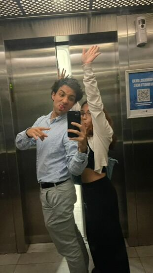
Bihonda
Nos conocimos en 2022, en Proyectos Interdisciplinarios 2. Ella era mi mentora de Programación 2 y terminó cambiándose de carrera por mi culpa. Desde entonces somos inseparables: es la amistad que más valoro hoy.
Un CV en tres actos
El balance de la vida
Atleta, científico de datos en formación y practicante en tecnología. Tres mundos que compiten por mis horas y que, juntos, me sostienen. Haz scroll y te lo cuento.
Antes de empezar
Cada burbuja es un pedacito de mí. Pasa el cursor o tócalas para leerlas, y arrástralas si quieres.
☝ Elige una burbuja.
Acto I
Familia, amigos y los lugares que me cambiaron.
La familia Medrano Terán
Soy el mayor de tres hermanos. Mis papás, Paola y Dante, mi hermana Daniela y el menor de la casa, Dacio.
Mi mamá es ingeniera de sistemas y lleva más de 20 años liderando el área de tecnología en la industria de hidrocarburos del Perú. Es una de las principales razones por las que elegí Data Science, y admiro cómo se ha ganado su lugar año tras año.
Edades en 2026. Cada barra es una vida que me acompaña.
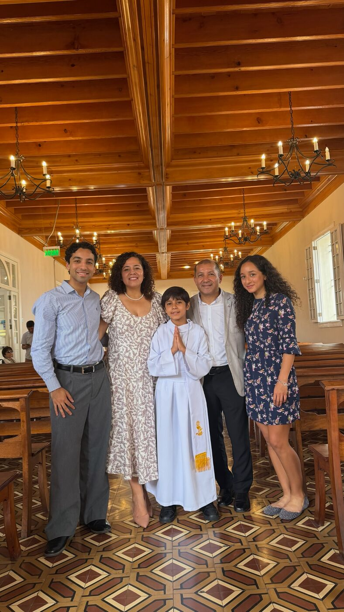


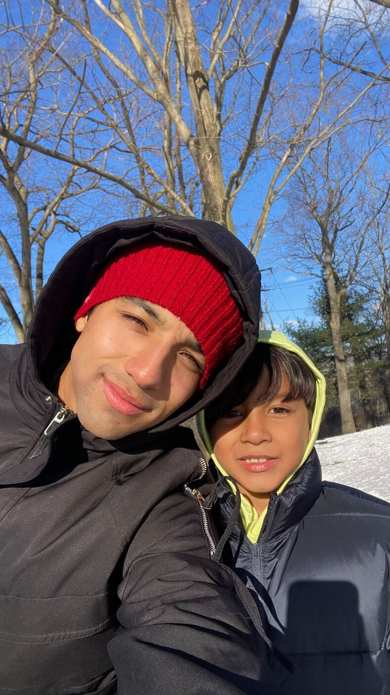
Mi hermana, mi compañera de pista
Empezamos juntos en el atletismo hace más de 10 años. Desde entonces hemos competido a nivel nacional e internacional, muchas veces en el mismo torneo.
Los dos somos campeones nacionales universitarios y campeones nacionales de nuestras categorías. Compartimos casa, pista y medallero.

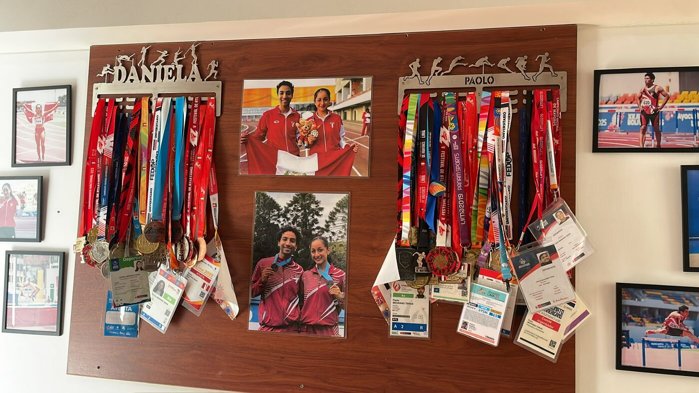
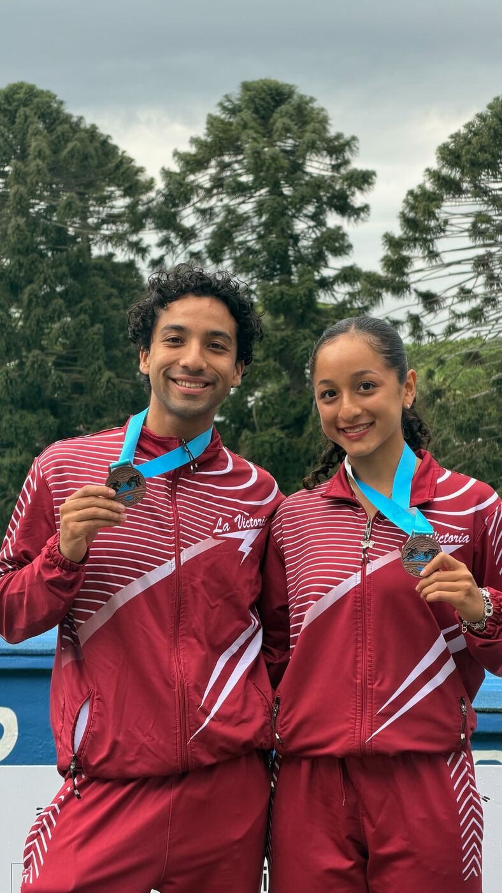
25 de noviembre de 2004
Nací en Barranco y estudié inicial, primaria y secundaria en el colegio San Luis Maristas de Barranco.
Siempre me tocó liderar, y lo disfruté.
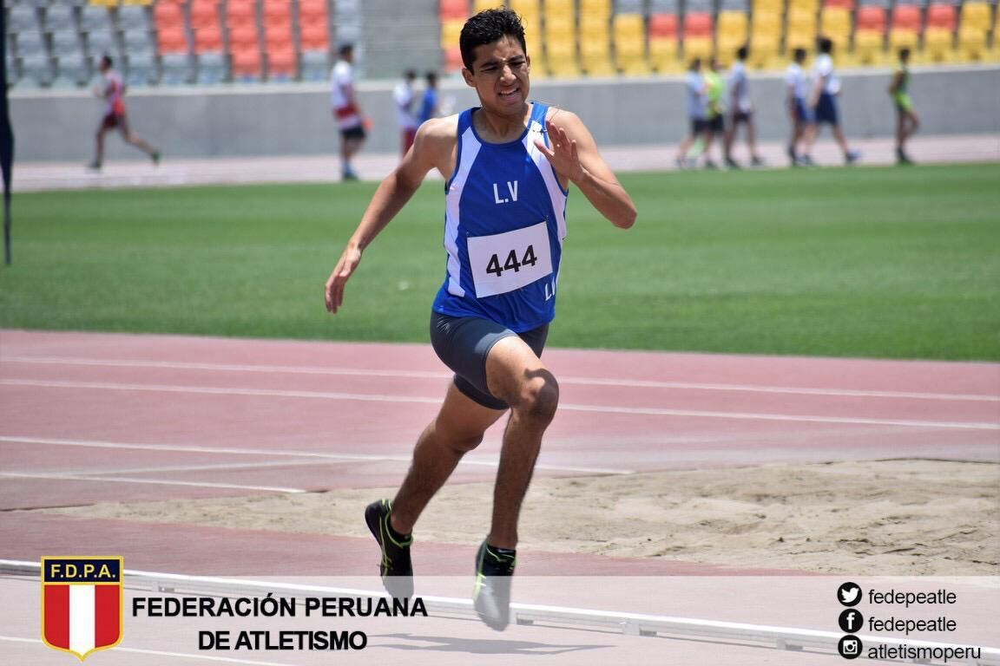

Un círculo pequeño y elegido

Nos conocimos en 2022, en Proyectos Interdisciplinarios 2. Ella era mi mentora de Programación 2 y terminó cambiándose de carrera por mi culpa. Desde entonces somos inseparables: es la amistad que más valoro hoy.

Jimena Reyes y Jeimy Pretell son mis mejores amigas del atletismo. Representamos al Perú en los Juegos Bolivarianos 2025, competimos en Arequipa, entrenamos en Tumbes y viajamos a Uruguay.
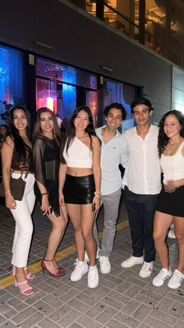
Mis amigos del colegio y de la pista. Pocos, pero los de verdad.
Lo que no vi venir
Toca cada tarjeta para voltearla.
El mapa de mis viajes
Acto II
Más de 10 años en la pista. 400 metros, 10 vallas.

De los 8 años a hoy
Mi prueba
La salida. 45 metros hasta la primera valla. Aquí se decide el ritmo de toda la carrera.
Las vallas. Diez obstáculos de 91,4 cm, cada 35 metros. Contar pasos, atacar, no frenar.
La curva y la contrarrecta. Las piernas empiezan a pesar. Gana quien mantiene la técnica.
Los últimos 40 metros. Ahí aprendí que una caída no define una carrera.
54.70. Mi mejor marca, el 28 de marzo de 2026 en la VIDENA. Un ritmo promedio de m/s.
El corredor avanza a ritmo constante: es una representación del promedio, no de mis parciales reales.
Año tras año
La mejor
Mi primera medalla internacional. Llegó después de un verano entrenando en el norte del país y con el apoyo de mi entrenadora, Patricia Martínez Pinto.
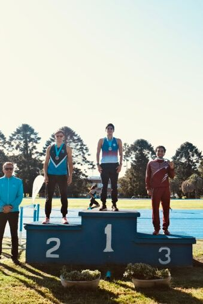
La que más me enseñó
Iba ganando con más de 50 metros de ventaja y me caí en la última recta.
Ese día entendí que el resultado no se decide en un tropiezo, sino en cómo vuelves a la pista al día siguiente. Desde entonces no corro para no perder: corro para mejorar.
Lo que no se ve en las fotos
Durante los últimos tres años las lesiones no me dejaron mostrar mi potencial. En 2026, por fin, completé una temporada sin lesiones graves.
Lo más importante que aprendí no fue físico: entendí que la salud mental pesa tanto como las piernas.
Mi sueño más grande es estar en los Juegos Panamericanos Lima 2027. Lo persigo mientras termino la universidad y trabajo. No elijo entre estudiar, trabajar o entrenar: aprendí a equilibrarlo.
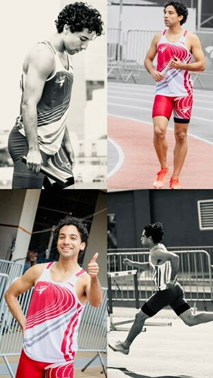
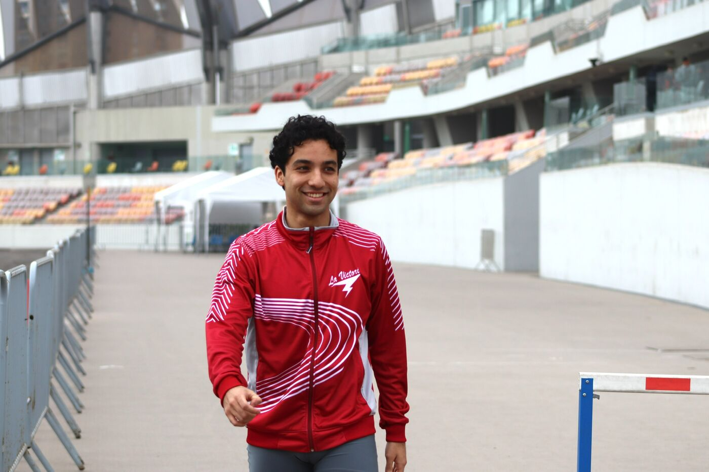
El equipo detrás

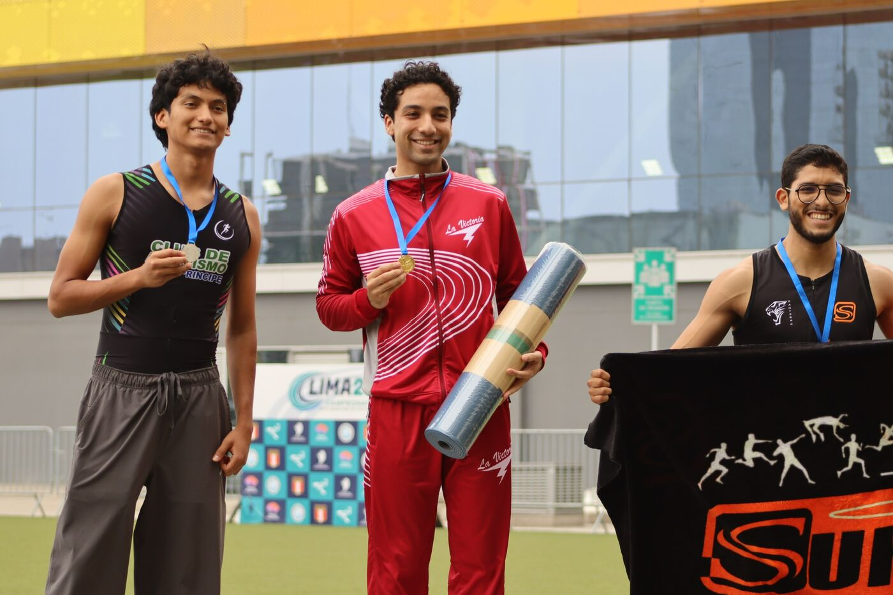

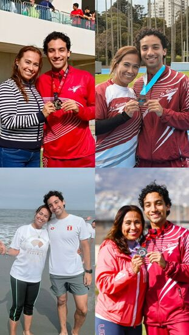

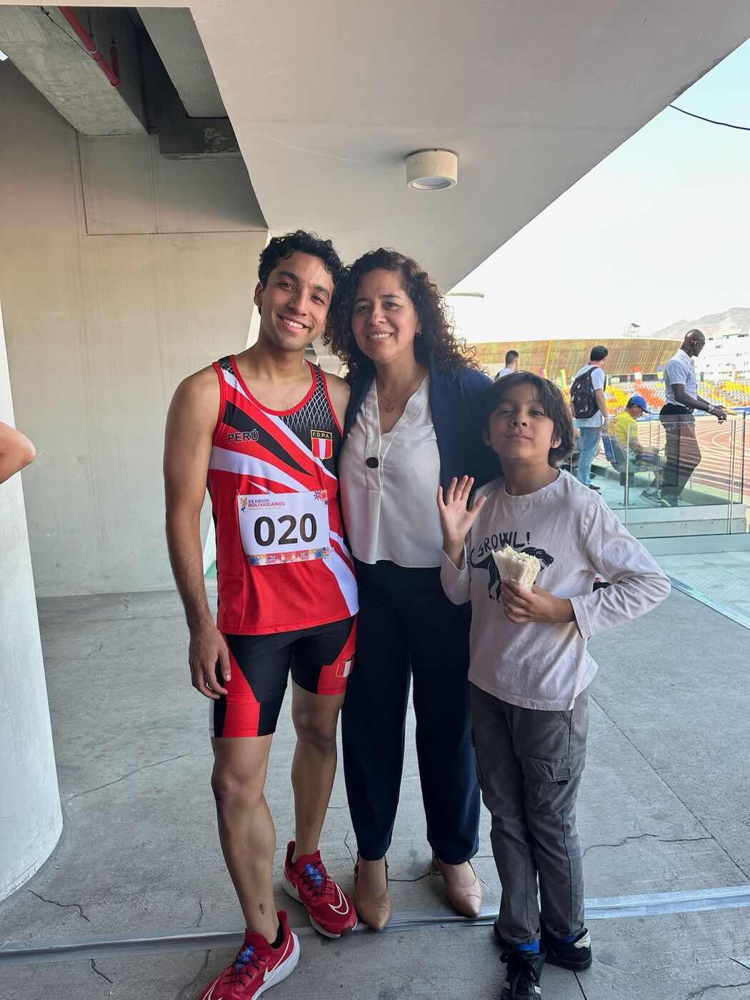
Acto III
De las aulas de UTEC a mi primera experiencia laboral.
UTEC, 2022 a 2027
Elegí Data Science en buena parte por mi mamá. Hoy estoy en el octavo ciclo y egreso el próximo año.
En 2024 recibí el reconocimiento UTEC Honors a la excelencia extraacadémica en la categoría deporte.


2022 a hoy
Proyectos académicos destacados
Desarrollo de Producto de Datos, 2025
Aplicación web de salud mental con IA que evalúa estados emocionales y genera recomendaciones personalizadas.
Base de Datos I, 2024
Base de datos relacional en PostgreSQL, del modelo entidad relación a la implementación en SQL.
Liderazgo y trabajo en equipo
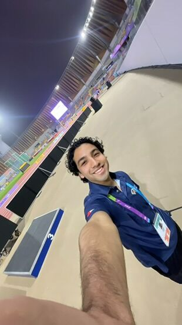
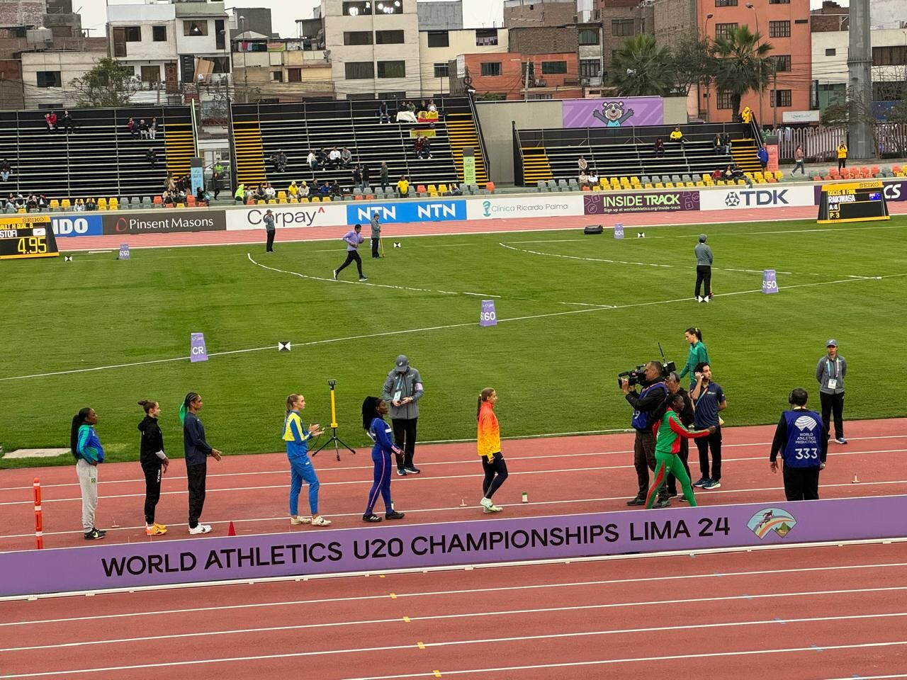

Floor Manager de Sport Presentation con la Federación Peruana de Atletismo. Coordiné listas de partida y fui el enlace entre la gerencia deportiva y el equipo de transmisiones de World Athletics, supervisando ceremonias y premiaciones.
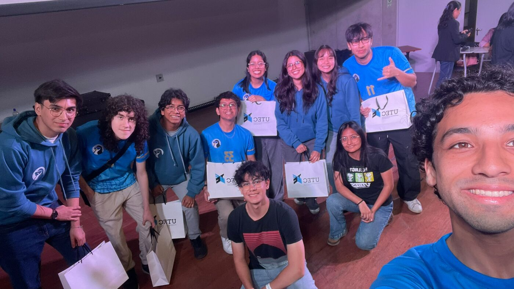
Líder y representante de la facultad de Computación entre 2023 y 2025. Organicé estrategias y motivé al equipo: fuimos bicampeones.

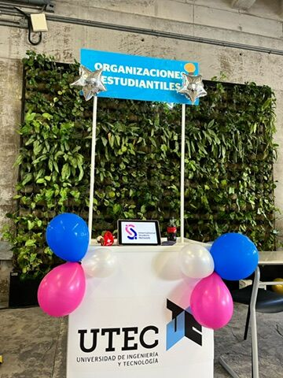
Coordiné sesiones y eventos para estudiantes de intercambio y gestioné las plataformas digitales de la organización.
El sueño
En Estados Unidos visité el IBM Research Center. Fue mi primera experiencia impactante con el mundo tech: ver un computador cuántico de cerca cambió la escala de lo que imagino para mi futuro.
Sueño con trabajar algún día en un lugar así de importante.
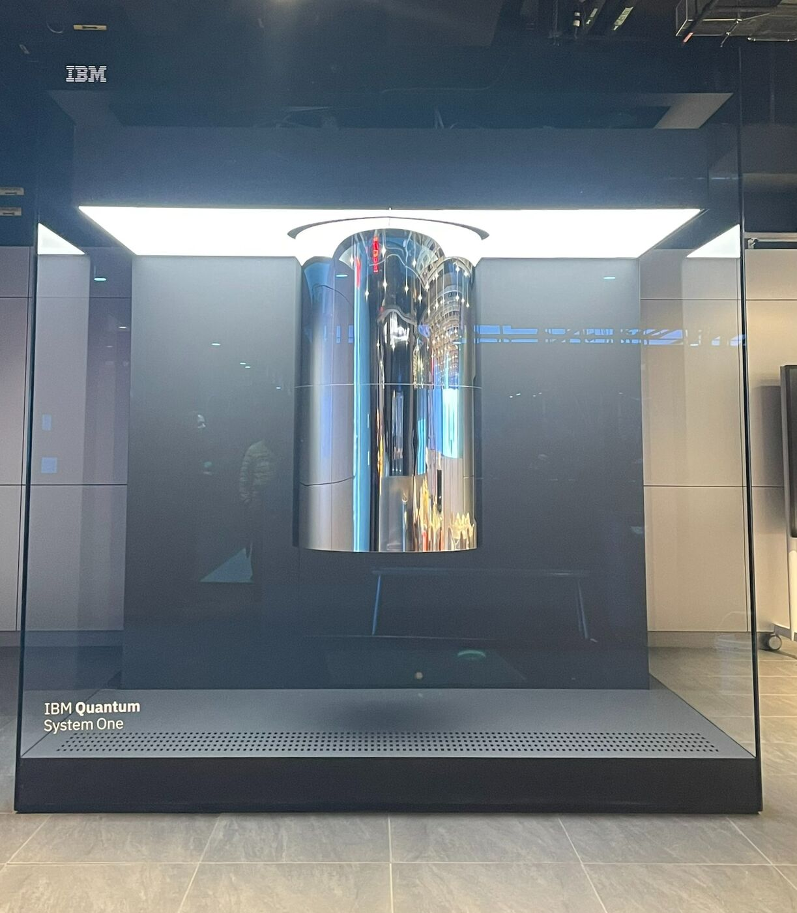

Abril de 2026 a hoy
Practicante Pre Profesional de Proyectos de Tecnología. Llegué a través de Bumerang, para completar mi curso de RLE.
El proceso de selección fue muy retador: competía con postulantes con experiencia laboral y yo era el único que nunca había trabajado. Creo que mis habilidades blandas y la confianza que transmito hicieron la diferencia.
Hoy veo todo lo relacionado a la tecnología de Gestión Humana y apoyo directamente a la gerencia corporativa.
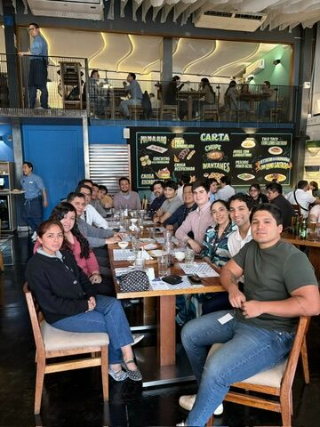

Caja de herramientas
Autoevaluación de dominio (0 a 100). Pasa el cursor por cada eje.
La disciplina de la pista me ordena en el trabajo, la curiosidad de los datos me hace pensar mejor cada entrenamiento y mi familia sostiene los dos lados de la balanza. No es fácil, pero es mío.
Gracias por recorrer conmigo estos tres actos.
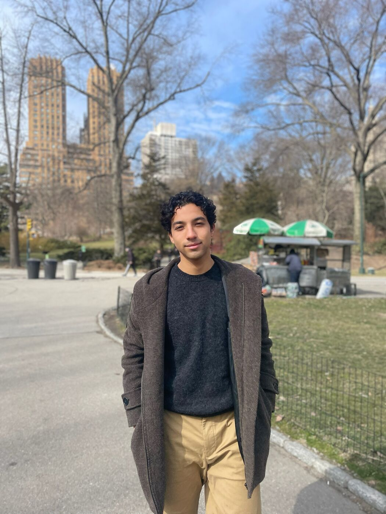
Hecho con D3.js. Música: Dance No More, Harry Styles.